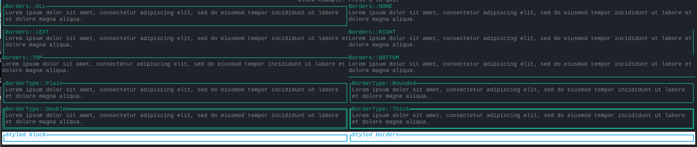
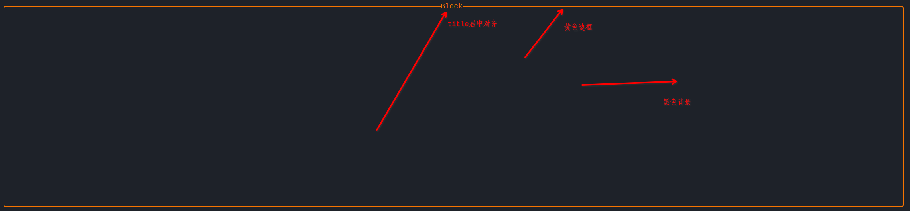
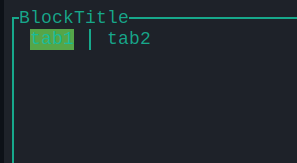
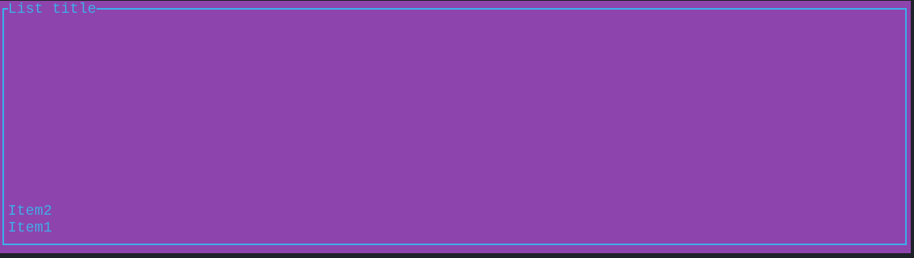
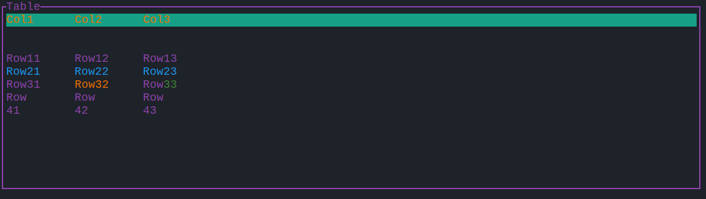

TUI库
开始TUI库之前我们先介绍下常用的跨平台终端操作库crossterm。其中常见的模块有四个：
- cursor：为终端中的光标提供各种功能。
- event：给键盘、鼠标、resize终端提供事件，
- style：给输入提供颜色等等属性。
- terminal：给正在运行的终端提供功能。
cursor中常见的结构体
DisableBlinking:禁用终端光标闪烁。EnableBlinking：开启终端光标闪烁。Hide：隐藏终端的光标。MoveDown:光标向下移动特定的行数。MoveLeft：光标向左移动特定行数。MoveRight：光标向右移动特定的列数。MoveTo：移动终端到给定的行列为止。MoveToColumn:沿列移动当前光标。MoveToNextLine：向下移动当前光标到下一行。MoveToPreviousLine：移动当前光标到上一行。MoveToRow：移动状态光标到给定的行和列。MoveUp：上香移动特定行数。RestorePosition：保存当前光标的位置。SavePosition：保存当前终端光标的位置。Show：显示终端光标。
event事件
事件模块提供了从键盘、鼠标、终端resize获取事件的功能。
- read函数当事件可用时立马返回事件负责就阻塞到事件可用为止。
- poll函数允许检查是否事件在特定时间周期可用，换句话说调用poll不会导致事件阻塞。
不允许从不同的线程调用这些函数或者在EventStream中组合他们。开启raw mode为了键盘事件正常工作。
默认鼠标事件是不开启的你必须通过
EnableMouseCapture开启。
结构体：
- DisableBracketedPaste：禁用括号粘贴模式。
- DisableFocusChange：禁用focus事件发射。
- DisableMouseCapture：禁用鼠标事件捕获。
- EnableBracketedPaste：开启括号粘贴模式。
- EnableFocusChange：开启focus事件发射。
- EnableMouseCapture：开启鼠标事件捕获。
- EventStream：Result
的流。 - KeyEvent：代表键盘事件。
- KeyEventState：键盘事件的额外状态。
- KeyModifiers：特殊案件修饰符(shift, control, alt, etc.).
- KeyboardEnhancementFlags：代表特殊的标记高数兼容的终端添加额外的键盘事件信息。
- MouseEvent：鼠标事件。
- PopKeyboardEnhancementFlags：禁用额外的键盘事件。
- PushKeyboardEnhancementFlags：开启kitty键盘歇息，添加额外的信息到键盘事件移除含糊不清的修饰符。
常见枚举： - Event：代表一个事件。
- FocusGained
- FocusLost
- Key(KeyEvent)
- Mouse(MouseEvent)
- Paste(String)
- Resize(u16, u16)
- KeyCode：按键代码
- Backspace
- Enter
- Left
- Right
- Up
- Down
- Home
- End
- PageUp
- PageDown
- Tab
- BackTab
- Delete
- Insert
- F(u8)
- Char(char)
- Null
- Esc
- CapsLock
- ScrollLock
- NumLock
- PrintScreen
- Pause
- Menu
- KeypadBegin
- Media(MediaKeyCode)
- Modifier(ModifierKeyCode):案件修饰符，在一些平台（如mac），并不会报告所有的鼠标事件，ctrl+鼠标左键点击为鼠标右键点击。
- KeyEventKind：按键事件类型。
- Press:按键按下
- Repeat：案件重复
- Replace：案件替换。
- MediaKeyCode：代表媒体key。(as part of KeyCode::Media).
- ModifierKeyCode：代表修饰符key。(as part of KeyCode::Modifier).
- Play
- Pause
- PlayPause
- Reverse
- Stop
- FastForward
- Rewind
- TrackNext
- TrackPrevious
- Record
- LowerVolume
- RaiseVolume
- MuteVolume
- MouseButton：代表鼠标按键
- Left,
- Right
- Middle
- MouseEventKind：鼠标事件类型
- Down(MouseButton)
- Up(MouseButton)
- Drag(MouseButton)
- Moved
- ScrollDown,
- ScrollUp
- ScrollLeft
- ScrollRigh
style
提供对文本应用属性和颜色的功能。常见结构体：
Attibutes:所有个能属性的bit集合。-Colors:用来表示前景和背景颜色。-ContentStyle:作用在内容上的风格。-Print:打印给定的可显示类型的命令。-PrintStyleContent:打印风格化内容的命令。-ResetColor:reset颜色为默认。-SetAttribute:设置属性集合。-SetAttributes:设置多属性集合。-SetBackgroundColor:设置背景颜色集合。-SetForegroundColor:设置外围颜色。-SetStyle:设置风格。-SetUnderlineColor:设置下划线颜色。
枚举：Attribute：代表属性。Color:代表颜色。Colored:代表前景或者背景颜色。ForegroundColor、BackgroundColor、UnderlineColor。
属性：Attribute Windows UNIX Notes Reset ✓ ✓ Bold ✓ ✓ Dim ✓ ✓ Italic ? ? Not widely supported, sometimes treated as inverse. Underlined ✓ ✓ SlowBlink ? ? Not widely supported, sometimes treated as inverse. RapidBlink ? ? Not widely supported. MS-DOS ANSI.SYS; 150+ per minute. Reverse ✓ ✓ Hidden ✓ ✓ Also known as Conceal. Fraktur ✗ ✓ Legible characters, but marked for deletion. DefaultForegroundColor ? ? Implementation specific (according to standard). DefaultBackgroundColor ? ? Implementation specific (according to standard). Framed ? ? Not widely supported. Encircled ? ? This should turn on the encircled attribute. OverLined ? ? This should draw a line at the top of the text. 颜色：
深色 浅色 Light Dark DarkGrey Black Red DarkRed Green DarkGreen Yellow DarkYellow Blue DarkBlue Magenta DarkMagenta Cyan DarkCyan White Grey
终端模块
多数终端行为都可以使用命令执行。
屏幕缓冲区
屏幕缓冲区是一个用来在终端展示二维的特性和颜色数据数组。终端有不同的缓冲区可以相互切换，默认的工作屏幕为主屏幕，其他屏幕为可用屏幕。可用屏幕不同于主屏幕，它有明确的终端窗口维度，没有滚动区域。Crossterm提供了切换到可用屏幕、修改返回主屏幕的功能，在可用屏幕上执行命令的时候主屏幕保持完整。
Raw模式
有时候默认模式是不相关的，在这种情况下，我们可以关闭它。常见的默认模式开启的场景：
- 输入不转发到屏幕。
- 输入不在回车后处理。
- 输入不是缓冲行行。
- 特殊案件删除backspace和Ctrol+C将不由终端驱动处理。
- 新行特性将不被println!处理使用write!替换。
通过ternimal::enable_raw_mode和terminal::disable_raw_mode函数开启或者关闭。
Lazy执行
刷新字节到终端缓冲器是一个很重的系统调用。如果我们在终端中执行一些行为，我们想周期性的做这些工作，我们可以再同一时间刷新更多数据到缓冲区，Crossterm提供了queue做这个事情，你可以调用Write::flush执行写入。你可以传入一个自定义的实现了std::io::Write的buffer到队列操作中。命令在buffer中被执行，常见的buffer是std::io::stdout和std::io::stderr。队列函数返回的是他自己，你可以使用它调用另一个命令：stdout.queue(Goto(5,5)).queue(Clear(CLeareType::All))或者你可以使用队列宏queue!(stdout,MoveTo(5,5),Clear(ClearTyle::All))。
直接执行
对多数应用程序来说，高效的刷新操作并不重要。在这个case下使用execute操作，这个操作将立即执行然后调用flush。你可以传递一个自定义的实现了std::io::Write的缓冲器执行execute操作。这个命令将在缓冲器执行。
ratatui
rataui常用的widget：
Axis:表格的x或者y轴。Bar：BarChar的bar对象BarChart：在单个widget上显示多个bar。BarGroup：代表多个BarChart的组。Borders：设置边界是否可见。Cell：Cell包含在Table的行中用于展示的Text。Chart：在笛卡尔坐标系下绘制一个或者更多的数据。Clear：clear/reset一个确定的区域允许重写。Dataset：一组数据点。Gauge：任务进程状态展示widget。LineGauge：单行展示的任务进度。List：展示一些可以被选中的元素。Paragraph：展示一些文本。Block:带边界的widget块。Tabs:在多个面板上下文展示可用的tab。
Axis常见属性和方法
title:设置title名称。bounds:设置边界。labels:设置label。style:设置风格。labels_alignment:定义标签对齐。
Block相关属性
设置外围边界线
Borders::LEFT:展示左边边界。Borders::RIGHT:展示右边边界。Border::ALL:展示包围边界。Border::TOP:展示上边界。Border::NONE:展示无边界。Border::BOTTOM:展示下边界。BorderType::Plain:展示普通边界。BorderType::Double:展示双层边界。BorderType::Rounded:展示圆角边界。BorderType::Thick:展示细边界。
示意图：。设置风格示例：
terminal.draw(|f| {
let size = f.size();
let block = Block::default()
.title("Block")
.title_alignment(ratatui::prelude::Alignment::Center) //设置title居中对齐
.borders(Borders::ALL) //打开边界线
.border_type(BorderType::Rounded) //边界线周围为圆角
.style(Style::default().bg(Color::Black).fg(Color::Yellow)); //设置block背景色为黑色，前景色为黄色
})?;

Tabs常见属性和方法
block：设置block风格。select：选中index。style:设置风格。highlight_style:设置高亮风格。
示例代码：
let tabs = Tabs::new(vec!["tab1", "tab2"]) //构建Tabs widgets
.block(
Block::default()
.borders(Borders::ALL)
.title("BlockTitle")
.title_alignment(ratatui::prelude::Alignment::Left),
) //设置包围block的风格，包括边界线，title和title位置
.highlight_style(Style::default().fg(Color::Cyan).bg(Color::LightGreen)) // 设置tabs的默认前景色为Cyan，背景为LightGreen
.select(0); //选中第一个tab
f.render_widget(tabs, size);

List常用函数
block:绘制边缘。style:设置list风格。highlight_style:设置高亮风格。highlight_symbol:设置高亮符号。repeat_hightlight_symbol：重复高亮风格。start_corner：设置角起点。len：List元素个数。is_empty:List是否为空。
let items = [ListItem::new("Item1"), ListItem::new("Item2")];
let lists = List::new(items)
.block(
Block::default()
.title("List title")
.borders(Borders::ALL)
.style(
Style::default()
.fg(Color::LightBlue)
.bg(Color::LightMagenta),
),
)
.start_corner(Corner::BottomLeft)
.highlight_style(Style::default().add_modifier(Modifier::BOLD))
.highlight_symbol(">>");
f.render_widget(lists, size);

Table
Table由Row组成，而Row由列表构造。Row中的每个单元称为Cell，Cell可以单独定义风格、颜色。整行也可以单独定义风格。
常用函数
block:设置表格边界header:设置表头style:设置表风格highlight_symbol:highlight_style:highlight_spacing:column_spacing:- ``
实现：
let table = Table::new(vec![
// Row can be created from simple strings.
Row::new(vec!["Row11", "Row12", "Row13"]), //从列表构建行
// You can style the entire row.
Row::new(vec!["Row21", "Row22", "Row23"]).style(Style::default().fg(Color::Blue)),
// If you need more control over the styling you may need to create Cells directly
Row::new(vec![
Cell::from("Row31"),
Cell::from("Row32").style(Style::default().fg(Color::Yellow)),
Cell::from(Line::from(vec![
Span::raw("Row"),
Span::styled("33", Style::default().fg(Color::Green)),
])),
]),
// If a Row need to display some content over multiple lines, you just have to change
// its height.
Row::new(vec![
Cell::from("Row\n41"),
Cell::from("Row\n42"),
Cell::from("Row\n43"),
])
.height(2),
])
// You can set the style of the entire Table.
.style(Style::default().fg(Color::White))
// It has an optional header, which is simply a Row always visible at the top.
.header(
Row::new(vec!["Col1", "Col2", "Col3"])
.style(Style::default().fg(Color::Yellow).bg(Color::LightCyan))
.bottom_margin(2), //设置表头和其他行之间的间距
)
// As any other widget, a Table can be wrapped in a Block.
.block(
Block::default()
.title("Table")
.borders(Borders::ALL)
.style(Style::default().fg(Color::LightMagenta)),
)
// 设置列宽
.widths(&[
Constraint::Length(5), //超过列宽的字符将被截断
Constraint::Length(5),
Constraint::Length(7),
])
// 设置列与列之间的间隔
.column_spacing(5)
// 当指定方法被选中后你希望强调一行
.highlight_style(
Style::default()
.add_modifier(Modifier::BOLD)
.fg(Color::LightRed),
)
// ...and potentially show a symbol in front of the selection.
.highlight_symbol(">>");
f.render_widget(table, size);

Paragraph
常见的方法：
block:设置Paragraph的包围风格。style:设置Paragraph的风格。wrap:对widget设置包围配置。scroll:对给定的paragraph设置scroll偏移。alignment:设置文本对齐方式。